20 Containers in Azure¶
20.1 Doelstellingen¶
Na dit hoofdstuk beheerst de student het volgende:
-
met een Containerfile een eigen image bouwen op basis van nginx en die lokaal testen;
-
de Azure CLI installeren op Linux en inloggen met az login;
-
met de Azure CLI een resource group en een Azure Container Registry aanmaken;
-
met Podman en een token van de Azure CLI inloggen op de registry en er een image naar pushen;
-
een image uit de registry starten in Azure Container Instances en de website openen;
-
de gebruikte resources opruimen, zodat ze niets meer kosten.
20.2 Introductie¶
Containers kan je ook in de cloud draaien.
-
We bouwen een eigen image met een Containerfile, zoals we al vaak gedaan hebben:
- een website met één eigen webpagina, gebaseerd op de image nginx.
-
Daarna uploaden we de image naar Azure Container Registry (ACR).
-
Tot slot starten we de image als container in Azure Container Instances (ACI) en surfen we ernaar.
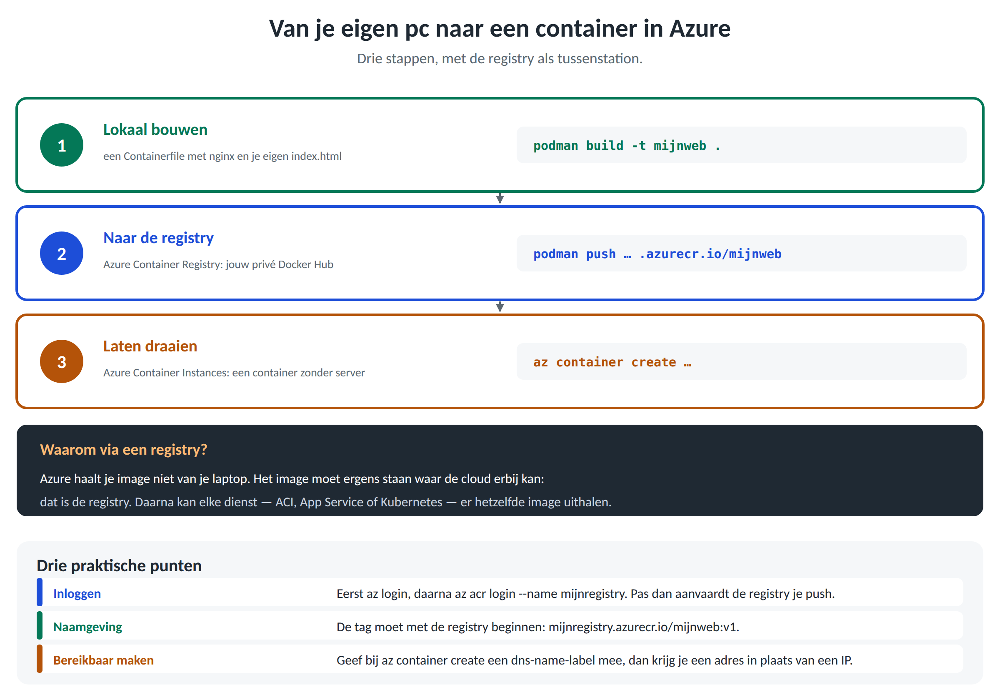
20.3 NGINX-container downloaden en draaien¶
Download de officiële image van NGINX:
student@serverXX:~$ podman pull nginx
? Please select an image:
registry.access.redhat.com/nginx:latest
registry.redhat.io/nginx:latest
▸ docker.io/library/nginx:latest
…
Controleer na de download:
student@serverXX:~$ podman images
REPOSITORY TAG IMAGE ID CREATED SIZE
docker.io/library/nginx latest 41f689c20910 5 weeks ago 197 MB
Start de container:
student@serverXX:~$ podman run --name nginx-test -d -p 8080:80 nginx
781abd3912e09f9db902d3448ca9e13d83459467ea5664089e515a2ea7fce1ee
Controleer of de container draait:
student@serverXX:~$ curl http://127.0.0.1:8080
<!DOCTYPE html>
…
20.4 Eigen image bouwen¶
We maken nu onze eigen image. Met Visual Studio Code maken we een Containerfile en een HTML-bestand.
Maak een map website met daarin een bestand Containerfile (Dockerfile mag ook) met deze inhoud:
FROM nginx
COPY index.html /usr/share/nginx/html
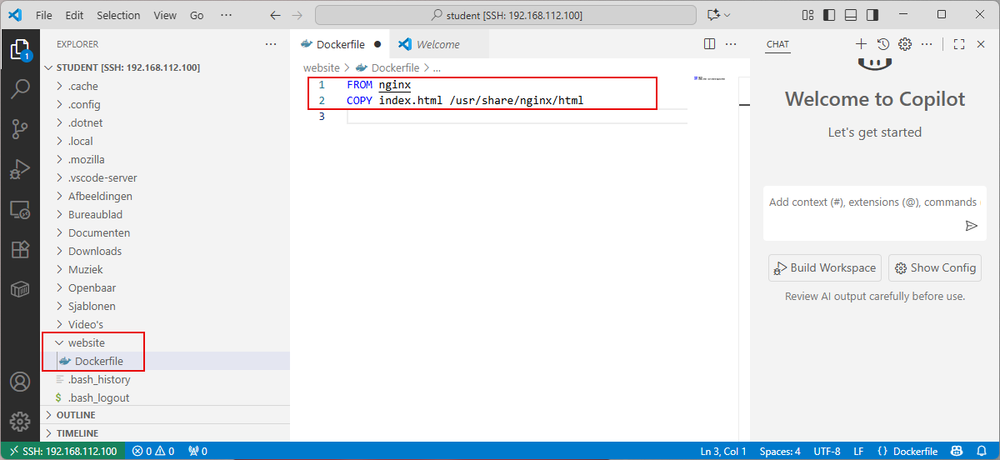
Maak in dezelfde map een bestand index.html met deze inhoud:
<html>
<body>
<h1>Hallo, dit is mijn container-app op het Internet!</h1>
</body>
</html>
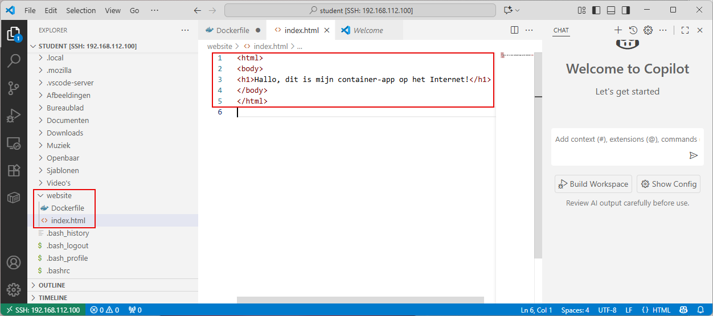
Bouw de image:
student@serverXX:~$ cd website
student@serverXX:~/website$ podman build -t mijn-nginx .
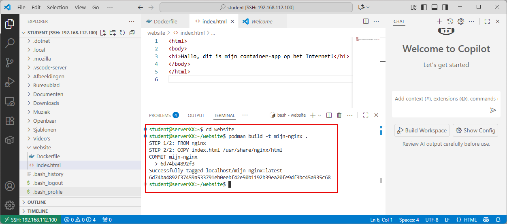
Verwijder eerst alle containers:
student@serverXX:~/website$ cd ..
student@serverXX:~$ podman rm -f --all
Start de container:
student@serverXX:~$ podman run --name mijn-nginx-test -d -p 8080:80 mijn-nginx
23b0d007b5c2a3a65d768ba2754dcd2fd3768e6ca9938d557f7cbc9f49dadd2f
Controleer:
student@serverXX:~$ curl http://127.0.0.1:8080
20.5 Azure CLI installeren op Linux¶
Informatie hierover vind je op https://learn.microsoft.com/en-us/cli/azure/install-azure-cli-linux?pivots=script.
Klik op dnf.
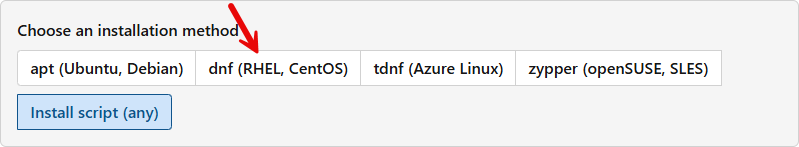
Je ziet hier de nodige stappen staan.
- Importeer de sleutel van de repository van Microsoft:
student@serverXX:~$ sudo rpm --import https://packages.microsoft.com/keys/microsoft-2025.asc
- Voeg de repository packages-microsoft-prod toe:
student@serverXX:~$ sudo dnf install -y https://packages.microsoft.com/config/centos/10/packages-microsoft-prod.rpm
- Installeer de Azure CLI:
student@serverXX:~$ sudo dnf install -y azure-cli
Na de installatie werkt het commando az.
student@serverXX:~$ az help
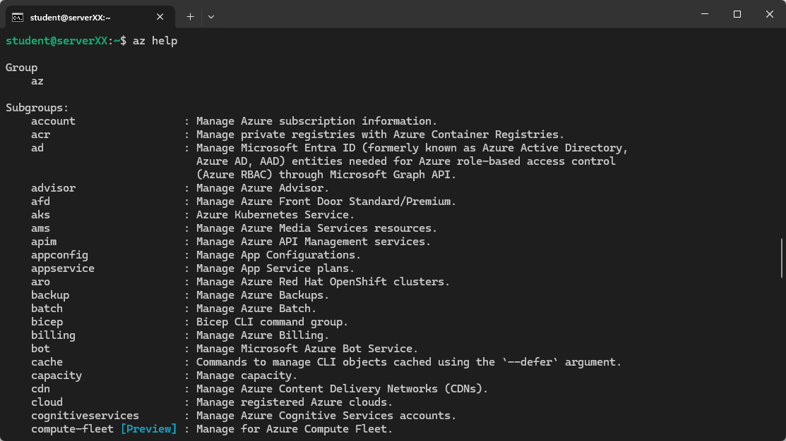
20.6 Inloggen op Azure CLI¶
Log in. Werk je via SSH, zonder browser op de server, gebruik dan een code:
student@serverXX:~$ az login --use-device-code
To sign in, use a web browser to open the page https://microsoft.com/devicelogin and enter the code DPX6YTQY3 to authenticate.
Open https://microsoft.com/devicelogin in de browser op je laptop.
Vul de code in die az login toont.
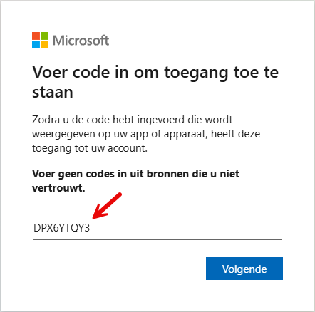
Log in met je PXL-account.
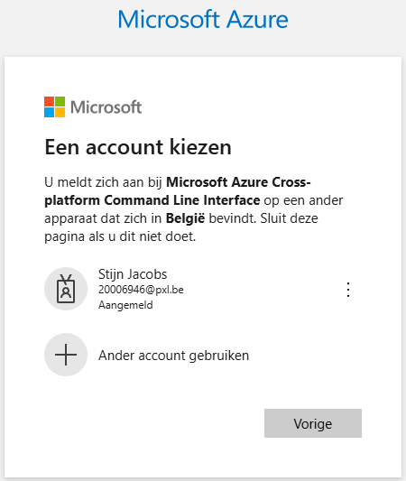
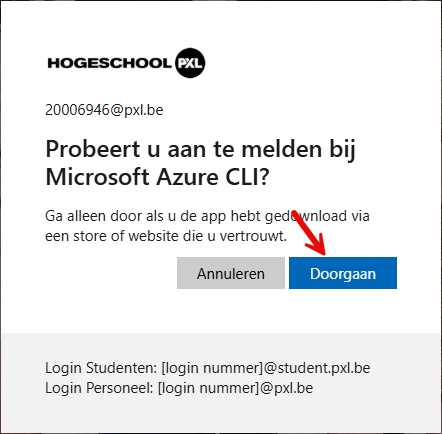
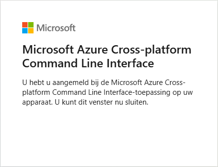
Je bent ingelogd. Je mag het browservenster sluiten.
Kies in de shell je actieve abonnement en druk op Enter.
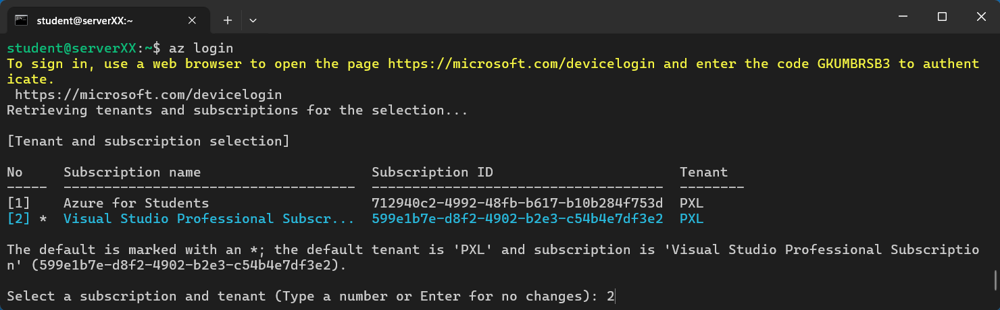
Controleer of je ingelogd bent:
student@serverXX:~$ az account show
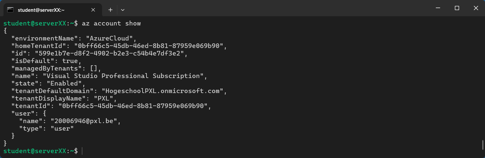
20.7 Image naar Azure Container Registry uploaden¶
Vraag de beschikbare regio's op:
student@serverXX:~$ az account list-locations --output table
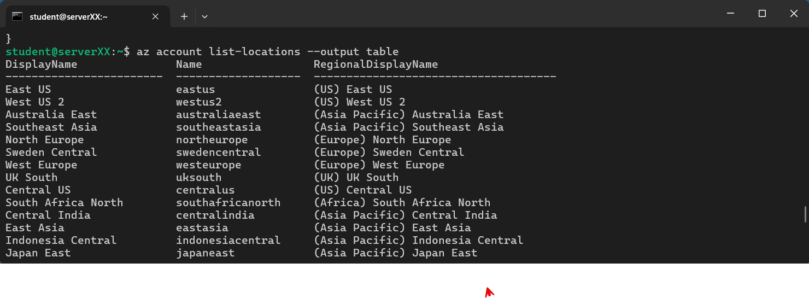
Niet elke Azure-dienst bestaat in elke regio. Zo vraag je op in welke regio's Azure Container Registry beschikbaar is:
student@serverXX:~$ az provider show --namespace Microsoft.ContainerRegistry --query "resourceTypes[?resourceType=='registries'].locations"
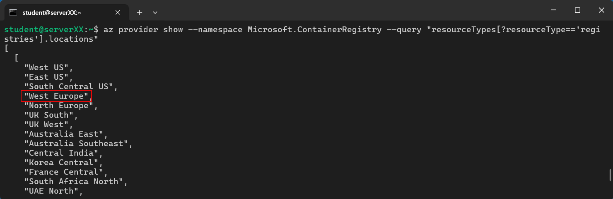
Maak een resource group:
student@serverXX:~$ az group create --name demo --location "West Europe"
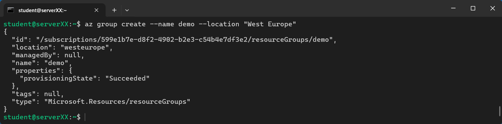
Registreer de provider Microsoft.ContainerRegistry. Dat hoeft maar één keer per abonnement:
student@serverXX:~$ az provider register --namespace Microsoft.ContainerRegistry
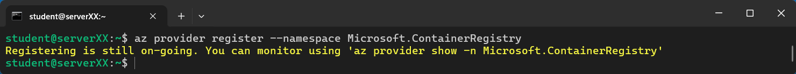
Maak in de resource group demo een Azure Container Registry. De naam moet uniek zijn in heel Azure en mag enkel kleine letters en cijfers bevatten. Vervang stijnjacobs daarom door je eigen naam:
student@serverXX:~$ az acr create --resource-group demo --name acrdemostijnjacobs --sku Basic
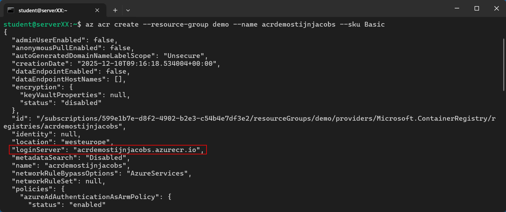
Log nu in op de registry. Het commando az acr login verwacht Docker. Met Podman vraag je daarom een token op:
student@serverXX:~$ TOKEN=$(az acr login --name acrdemostijnjacobs --expose-token --output tsv --query accessToken)
Log met dat token in. De gebruikersnaam is altijd 00000000-0000-0000-0000-000000000000. Het token blijft drie uur geldig.
student@serverXX:~$ podman login acrdemostijnjacobs.azurecr.io --username 00000000-0000-0000-0000-000000000000 --password $TOKEN
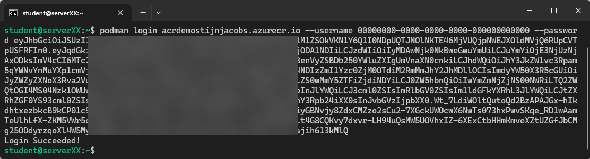
Tag de image:
student@serverXX:~$ podman tag mijn-nginx acrdemostijnjacobs.azurecr.io/mijn-nginx
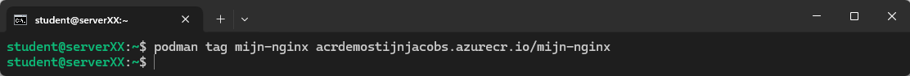
Controleer:
student@serverXX:~$ podman images
REPOSITORY TAG IMAGE ID CREATED SIZE
acrdemostijnjacobs.azurecr.io/mijn-nginx latest 52282c4229ff 13 minutes ago 156 MB
…
Push de image naar de Azure Container Registry:
student@serverXX:~$ podman push acrdemostijnjacobs.azurecr.io/mijn-nginx
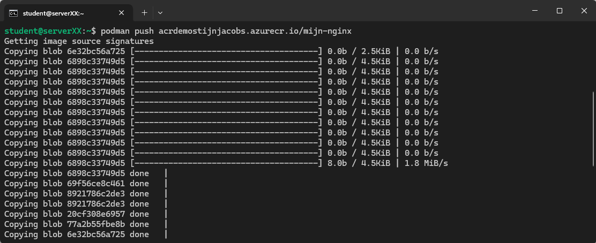
Je vindt de image ook terug in de portal, bij je registry onder Repositories.
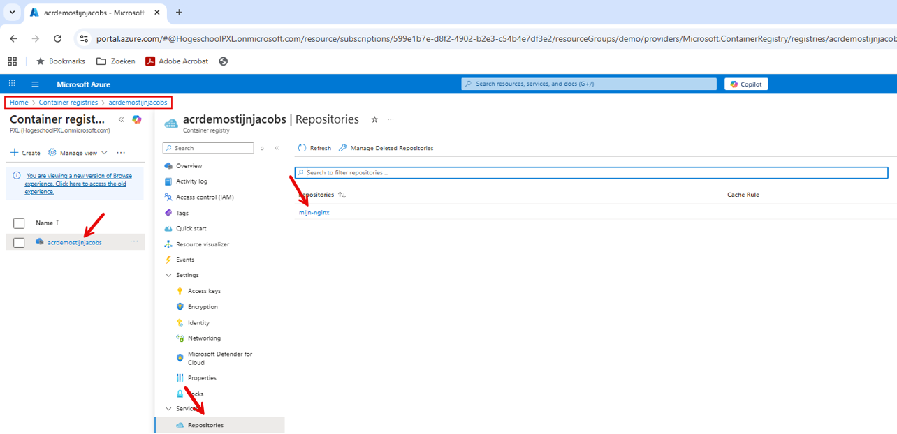
20.8 Container draaien in Azure Container Instances¶
Maak nu een Azure Container Instance aan.
Ga naar portal.azure.com, zoek naar Container instances en klik erop.
Klik linksboven op Create.
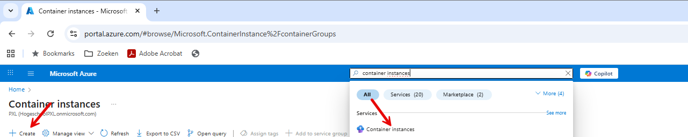
Vul onderstaande gegevens in.
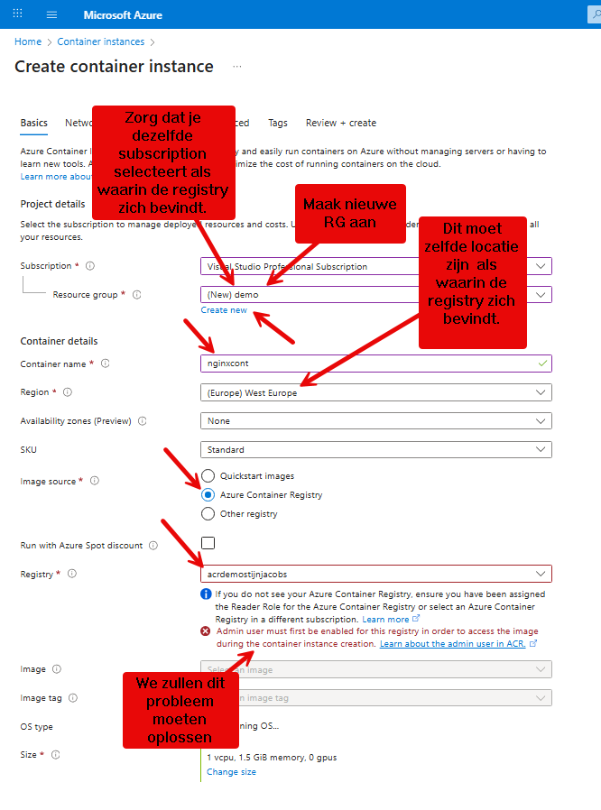
Je krijgt een melding dat de beheerdersgebruiker van de registry niet ingeschakeld is. Dat lossen we eerst op. Ga hiervoor naar onderstaande locatie.
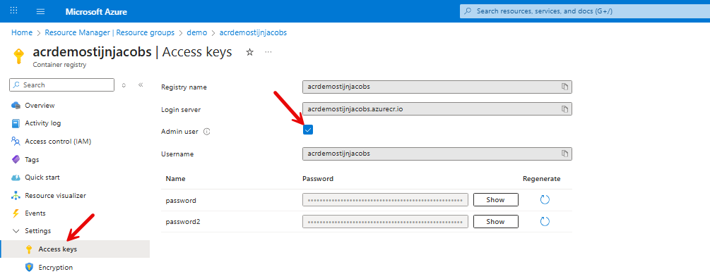
Ga terug naar het aanmaken van de container instance en vul de gegevens opnieuw in.
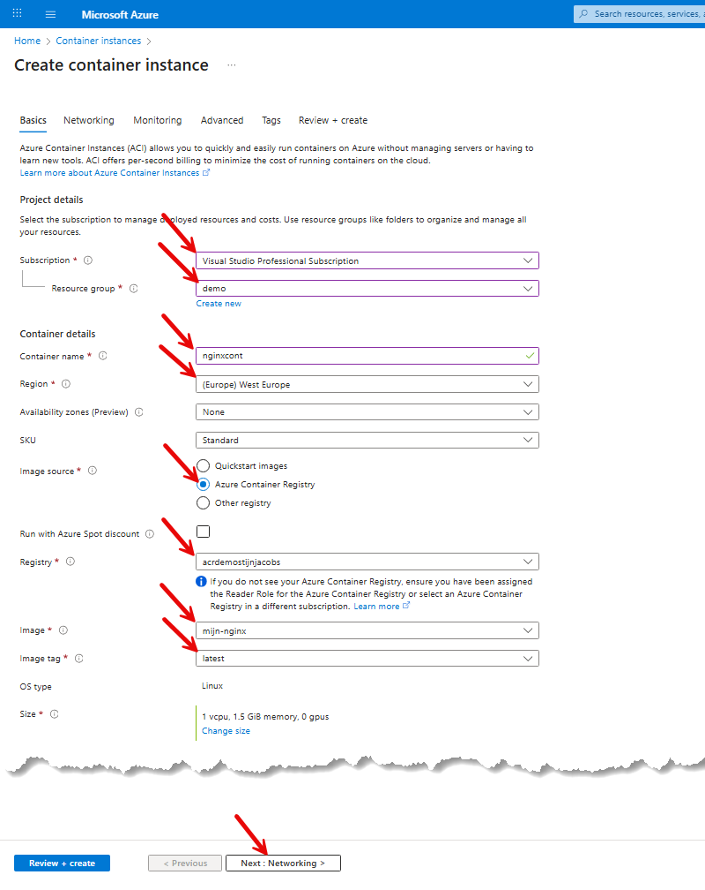
Laat poort 80 staan.
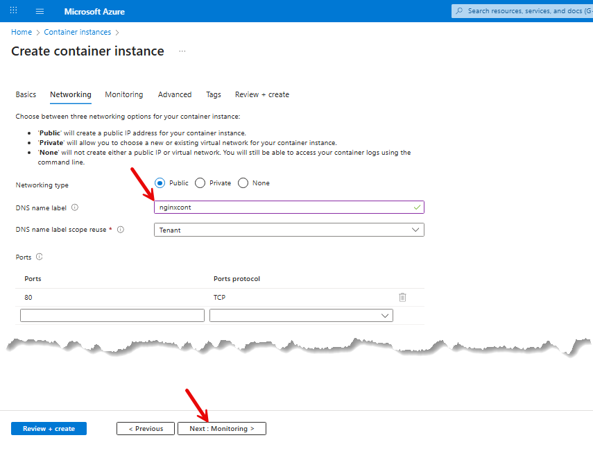
Laat alle andere instellingen staan (3 x Next).
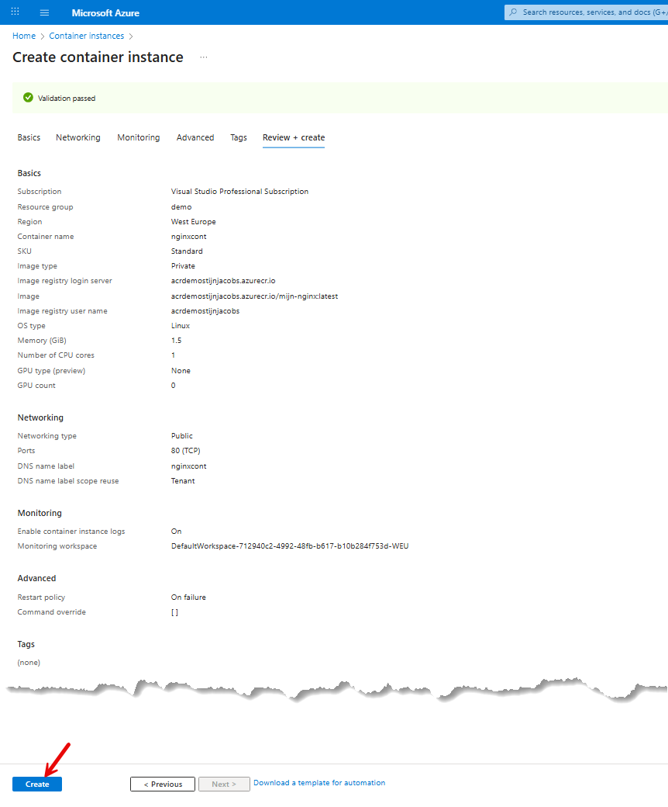
Wacht even tot de container is aangemaakt.
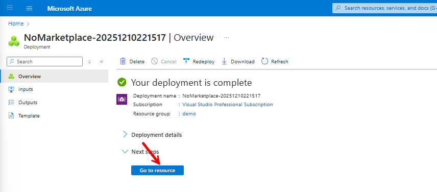
De container draait (Running) en is gebaseerd op Linux.
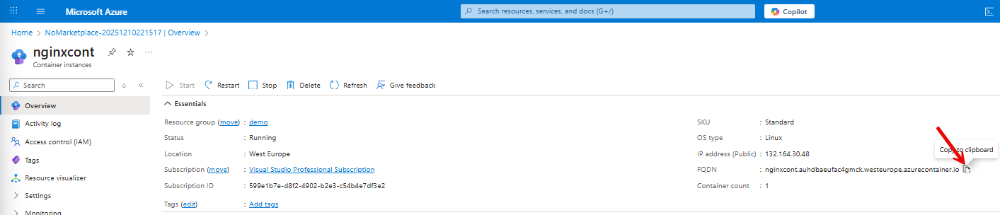
Surf naar de container via zijn FQDN. Die bestaat enkel als je bij het aanmaken een DNS name label invulde; anders gebruik je het publieke IP-adres.
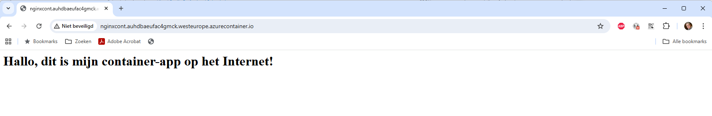
20.9 Opruimen¶
Een registry en een container instance kosten geld zolang ze bestaan, ook als je ze niet gebruikt. Verwijder daarom de resource group demo, met alles erin, als je klaar bent. Staat je container instance in een andere resource group, verwijder die dan ook.
student@serverXX:~$ az group delete --name demo --yes --no-wait